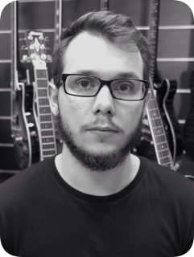
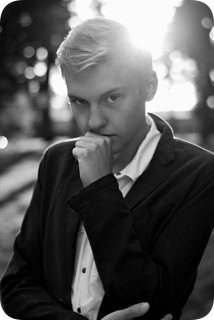

Nasi nauczyciele

Łukasz M
Pochodzę z Kurpii. Muzyką zaraził mnie ojciec już w dzieciństwie, ucząc pierwszych utworów na instrumentach klawiszowych i gitarze. Założyłem zespoły Pozor, Fanatyk i MSW. Jestem absolwentem Edukacji artystycznej (UWM). Obecnie udzielam się w The Alley, Jak Wiatr, ŁapTrio oraz Stereo.

Antoni K
Zainteresowałem się gitarą w wieku 15 lat. Zaczynałem od rocka i funku, potem zainteresowały mnie niższe stroje i mocniejsze granie. Inspirują mnie metalcore i progresywny metal (Killswitch Engage, Periphery).

Maciej M
Czynnym muzykiem jestem od wielu lat. Ukończyłem Wydział Sztuki na kierunku Edukacja artystyczna w zakresie sztuki muzycznej.

Mateusz W
Zacząłem od gitary basowej, jednak pasją stała się gitara elektryczna. Interesuję się sprzętem muzycznym oraz realizacją dźwięku.